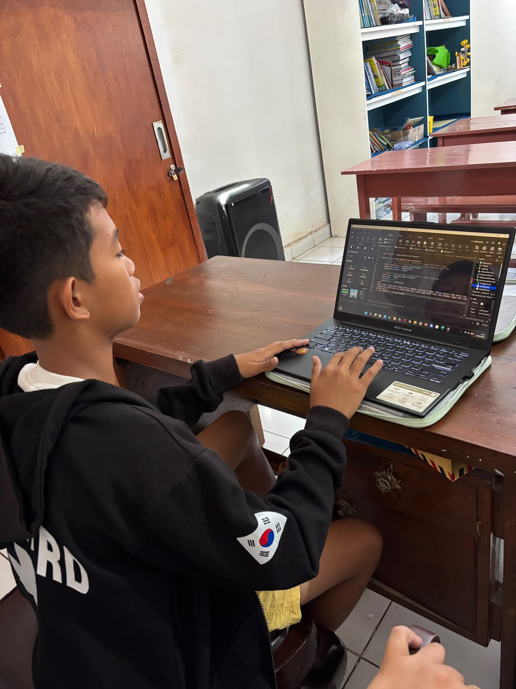

Kisah Sukses dari
Penjelajah Kami!
Di sinilah karya luar biasa dari siswa kami ditampilkan! Setiap proyek adalah petualangan yang menceritakan perjalanan kreativitas dan dedikasi. Terinspirasi oleh pencapaian mereka? Bergabunglah dan biarkan petualangan Anda dimulai!
Pajangan Proyek Pilihan

Cyber City
RP Game
Sarah (12 Tahun)
Lead Roblox Creator
Sebuah dunia Roleplay 3D masif yang dibangun dalam Roblox Studio — arsitektur cyberpunk, sistem mata uang virtual, dan NPC interaktif tingkat lanjut.
Galeri Eksibisi
Sistem AI Kasir Pintar
Budi (14 Tahun) · Web Dev
Aplikasi kasir berbasis web menggunakan logika JavaScript kompleks untuk kalkulasi inventaris dan struk real-time.

Robot Pemilah Sampah
Kevin (10 Tahun) · Robotics
Proyek Arduino dengan sensor ultrasonik dan motor servo yang secara otomatis membuka tutup tempat sampah.

Portofolio Animasi Web
Nadia (15 Tahun) · Web Dev
Website portofolio pribadi yang penuh dengan animasi CSS 3D dan transisi scroll mulus tanpa framework eksternal.